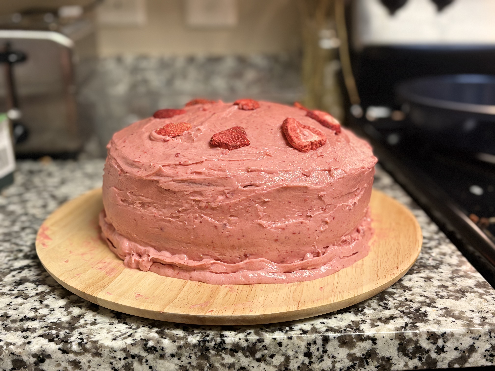
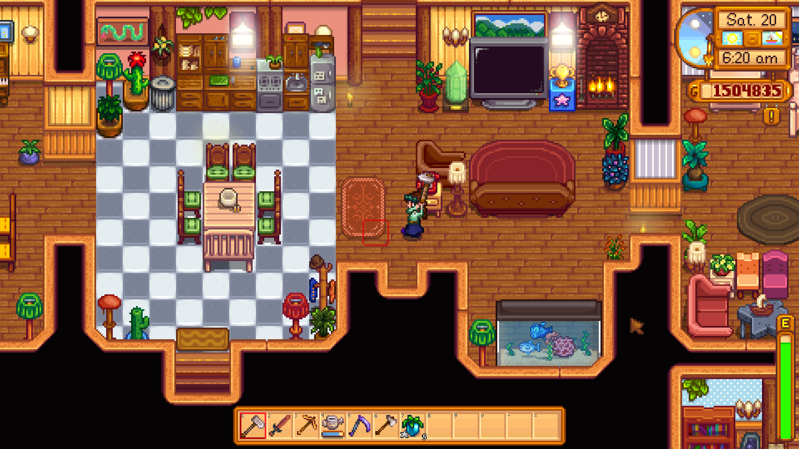

Stardew Valley by Indie developer ConcernedApe is one of my all-time favorite video games. It is a cozy farming/life sim about restoring an old farm that you as the player character inherit from your grandpa. Despite coming out in 2016, it still receives major gameplay updates that keep players coming back to it. But it is much more than just farming. Other gameplay activities include:

It is such a beloved game to me that I even purchased its Official Cookbook, which contains recipes for in-game food items that can be cooked. One such recipe is for the delicious made-from-scratch "Pink Cake," a cake that I am proud to say I've baked 3 times to date. I currently have 3 saves on the desktop version on my PC, each with different gameplay styles. My oldest save was really a test run for me when I was first learning the game, so more recent saves have similar progress on them despite having less gameplay time due to me getting better at the game.
| Farm Name in Run | | In-game Time Elapsed | | Real Time Spent in Run |
|---|---|---|
| Amber Farm | 496 days | 638.5 hours |
| Oakland Farm | 172 days | 224 hours |
| Riverview Farm | 247 days | 226.25 hours |

My house within my first run still needs some work as I didn't know what I was doing for the first few in-game years, but I've learned a lot as a player. My biggest helper along the way was the Stardew Valley Wiki, a player-run site with all the known information about the game to help players. I didn't know about the website for the first few months I played, but I'm glad I discovered it, as it made it easier to understand how to optimize my experience.